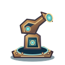
Основание
Дозорная труба, кристалл обнаружения
Полные векторные модели 128 × 128, прозрачный фон. Теплая медь, светящиеся стёкла и три разные архитектуры. Конфигурации 5–2–0 показаны с настоящими вторичными накладками.

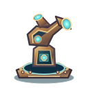
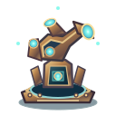
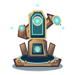
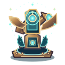
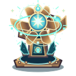
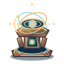
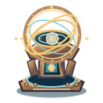
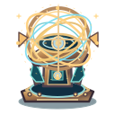
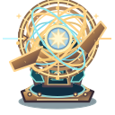
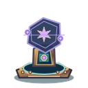
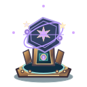
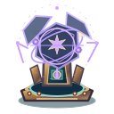
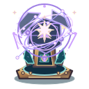
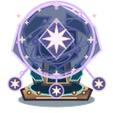
Каждая композиция сохраняет силуэт пятой ступени основной ветки и добавляет реальную накладку второй ветки второго тира.
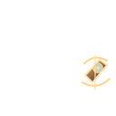
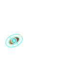